Install and Work with Zotero
Zotero is a citation managment tool. It is free and multiplatform (Windows, Linux, Mac).
The last version, Zotero 5.0, is used as an standalone software and it works with Firefox as its primary platform (It can be used with Chrome and Safari but the plugin extension is not completely developed).
Zotero helps you to “collect, organize, cite, and share research”.
Zotero works at two different levels:
- as an standalone software on your machines
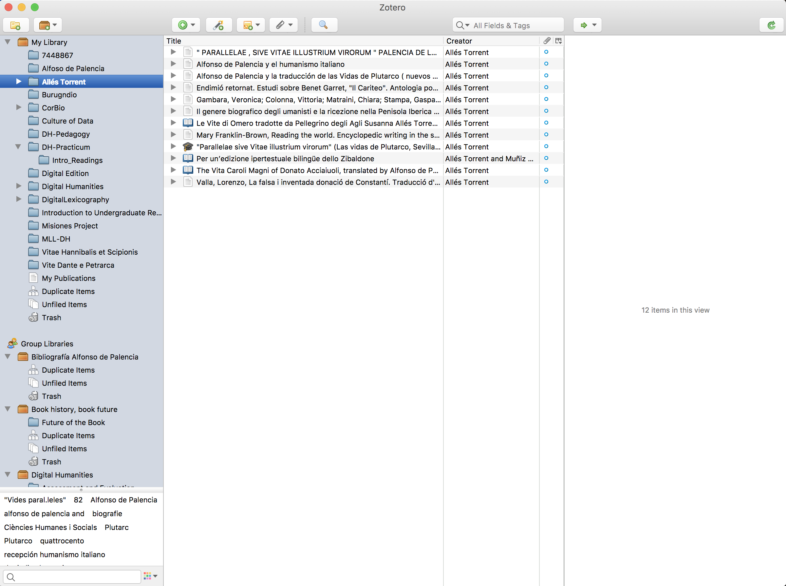
- as an extension for Firefox, connected with your account.
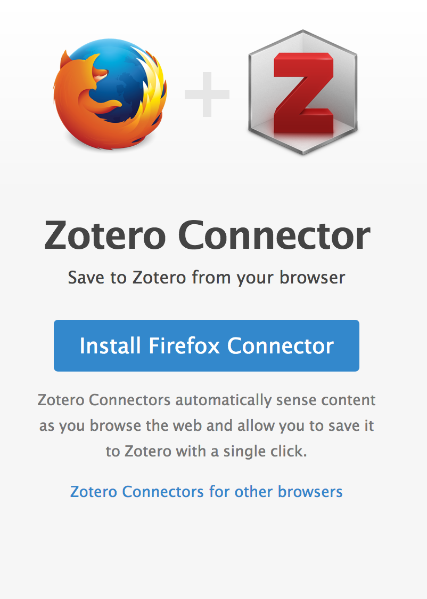
Frist Steps:
- Download and Install Firefox, if you don’t have it.
- Create a username: https://www.zotero.org/user/register
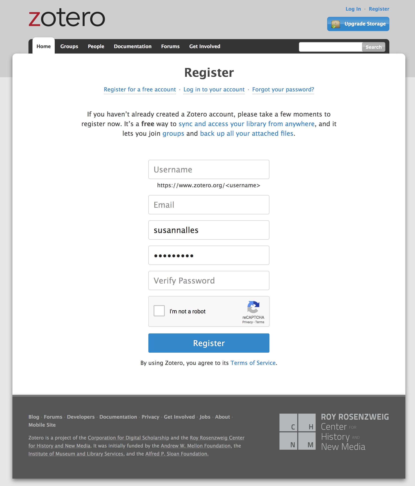
Once you are logged in, you can manage your folders and all your items:
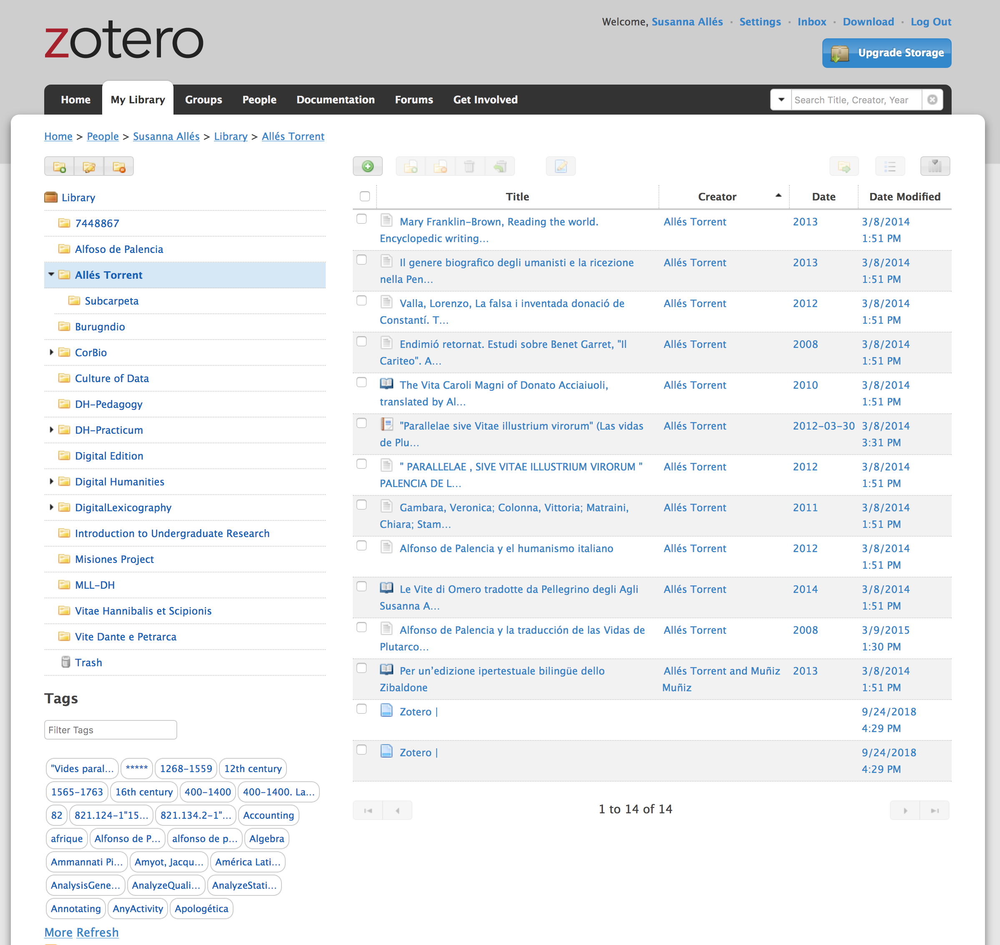
You can try to create a folder collection
Download Zotero
The best way to use Zotero is an standalone app, as such you can use it even if you don’t have an internet connection:
Now, you also have to download the Firefox Connector to be able to collect all items that you need for your bibliography:
Once you have install the connector you will need to restart your browser, and you will see a litle icon on the top right corner:
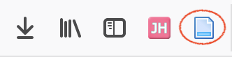
Open your Zotero app, login with your credentials, and start exporting articles, books, etc. that you whish.
Zotero is syncornized
Zotero is syncronized with your app and with the online platform. Be sure at the very begining that you login with your credentials, at Zotero > Prefernces
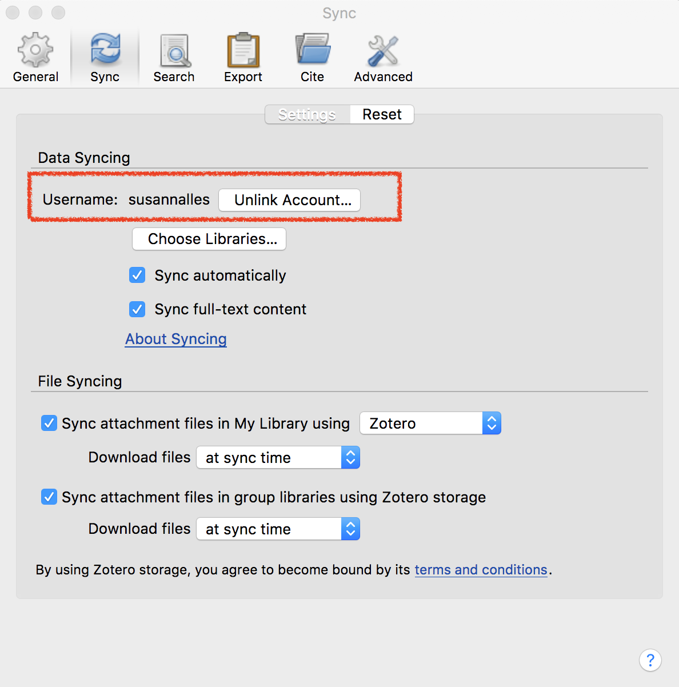
If sometimes you need to syncronize it faster or be sure that everything is up to date, click the sync botton in the top right corner of your app:
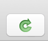
Create a Collection
You can create collections from the online platform or from your app.
- To create a new collection: 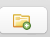
Collect bibliographical items
Go to UM catalog library and find some bibliography you need https://www.library.miami.edu/.
- Download at least 4.
- Visualize in the list: title, Creator, Item Type, Date
- Explore the Metadata section: Infos, Notes, Tags, Related
Add notes, and tags
For each item, you can add personal notes, and also tags or keywords.
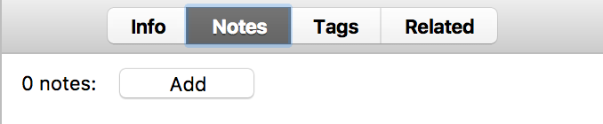
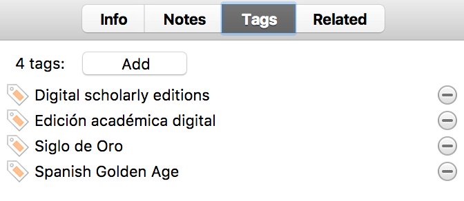
Collaborate and share bibliography
- To create a Group collection that will be shared with other people: 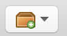
Export in different citation styles
- Choose the items you want in your bibliography
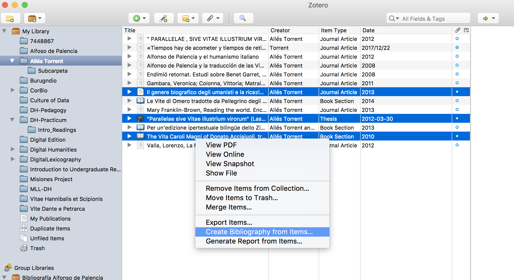
- Choose the style you want (MLA, Chicago, etc.):
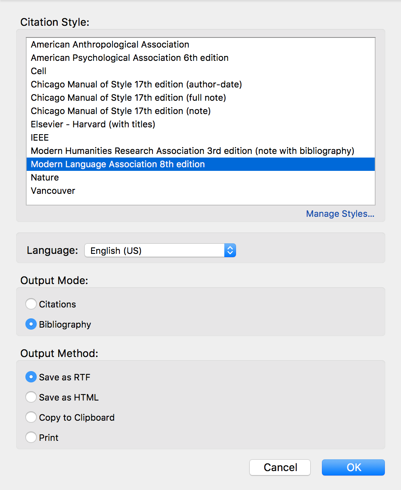
- Save it in rdf format or docx or pdf:
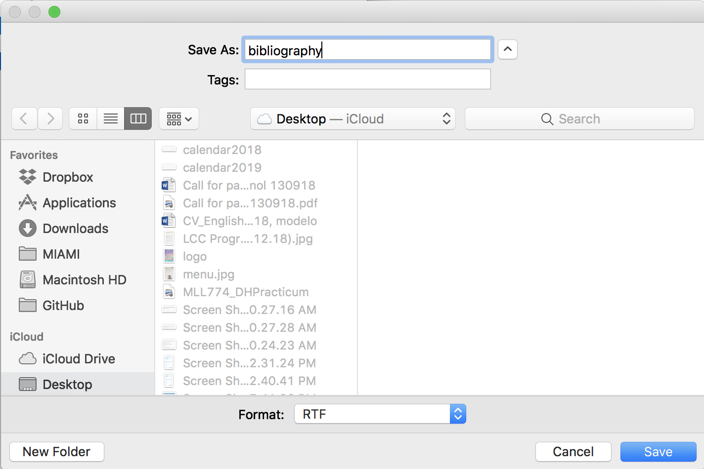
- And voilà:
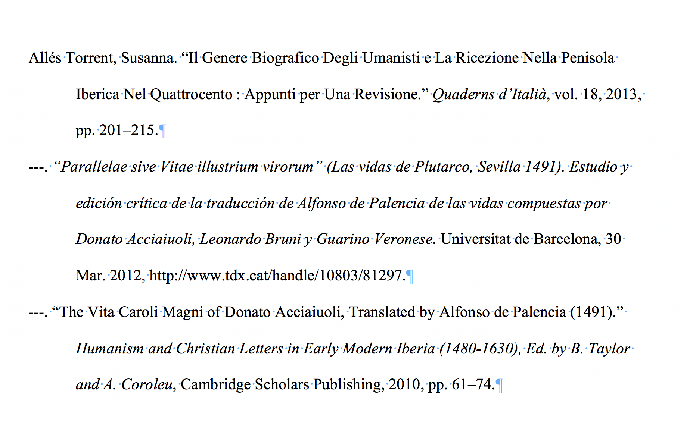
Export it directly to Microsoft and LiberOffice
Last versions of Microsoft Word have the Zotero plugin installed automatically when you install the app. So it is easy as open Word after the installation and you have it:
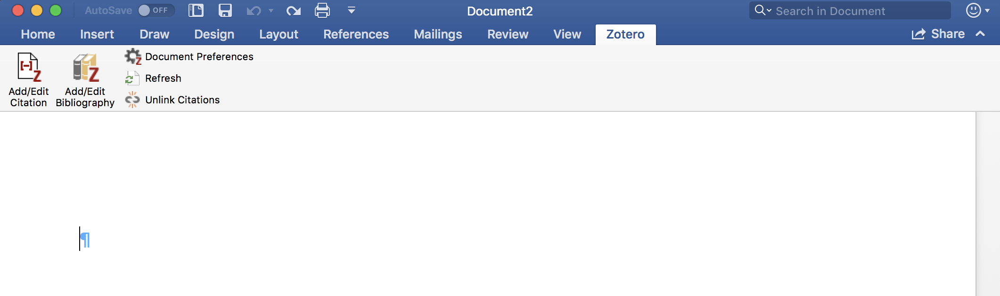
While you write, you can add and edit citations in your text. 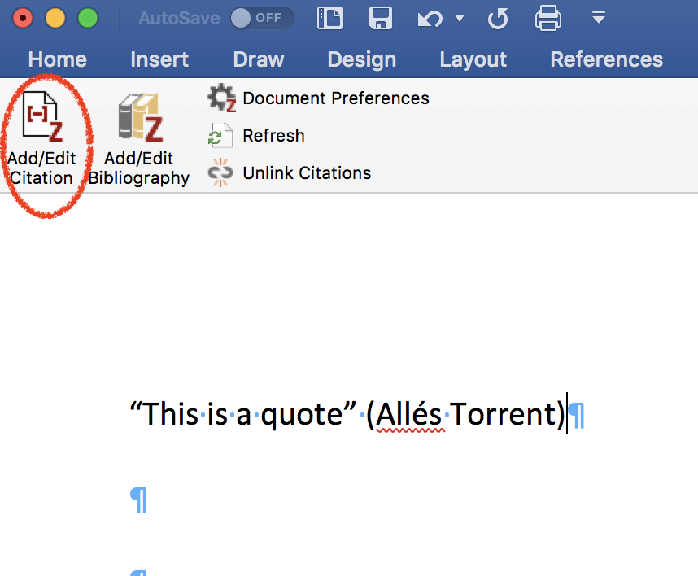
For which, a pop-up windwow will appear with all your items: 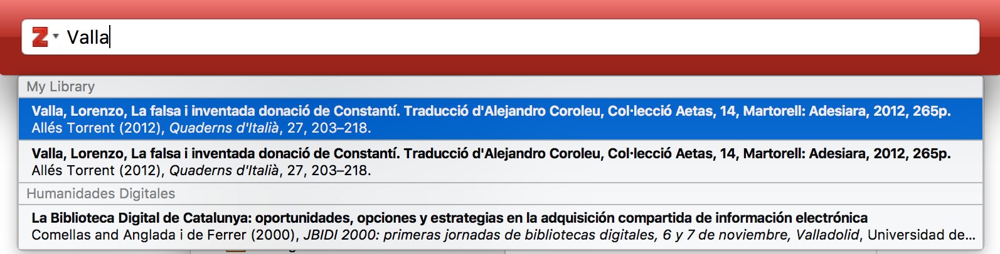
And at the end you can create the full bibliography which will be created with the items that you have cited.
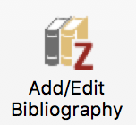
Timelines
You can create a timeline of your bibliography, going to Tools > Create Timeline:
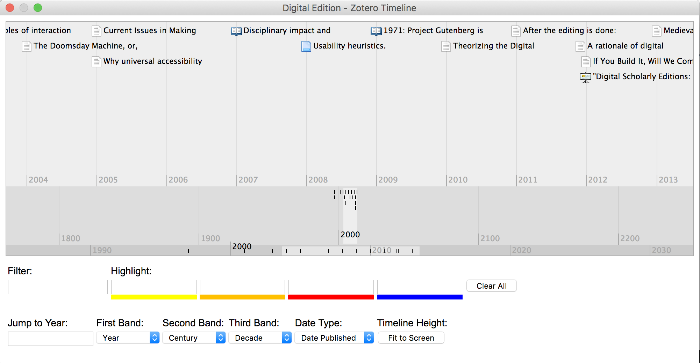
And the coolest thing: Zotero API
You can do many things with the API, one of which is to import your bibliography directly to your webpage with a line of code:
h2>Diachronic Spanish Corpus Linguistics</h2>
<?php $URL='https://api.zotero.org/users/1167759/collections/GCNLKMRQ/items?format=bib&style=chicago-author-date'; $var=file_get_contents($URL); echo $var?>
</div>
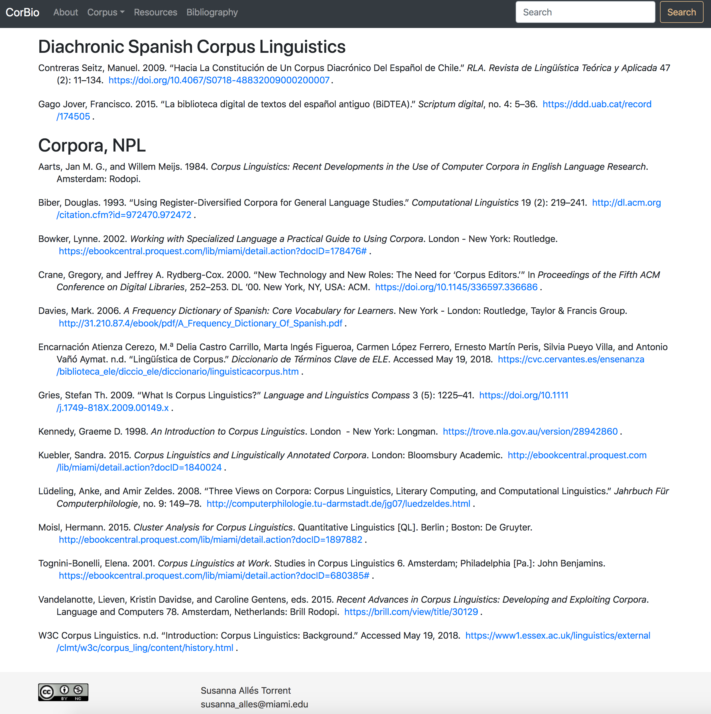